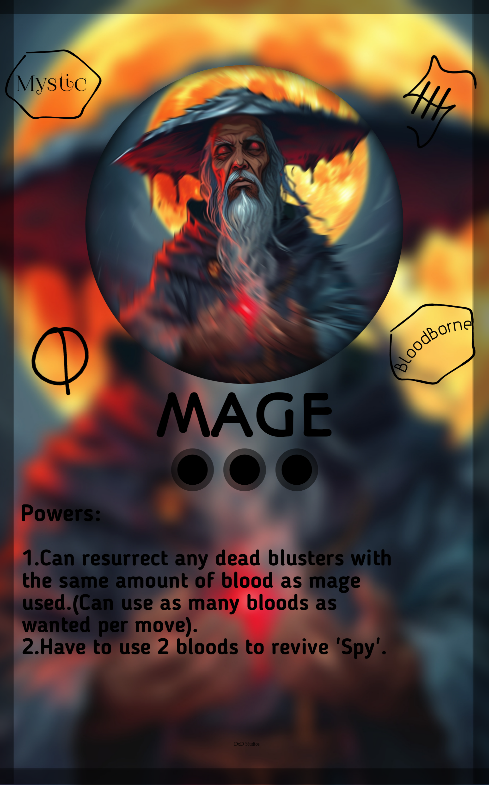
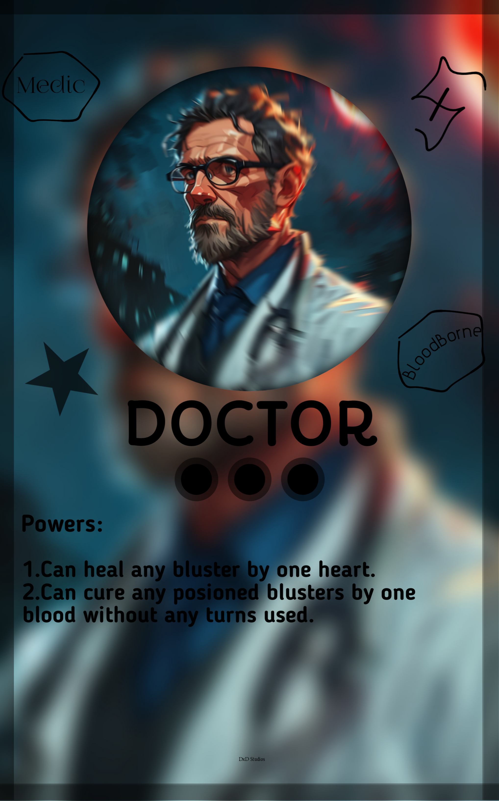
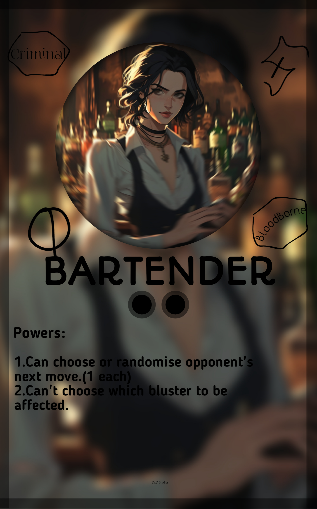
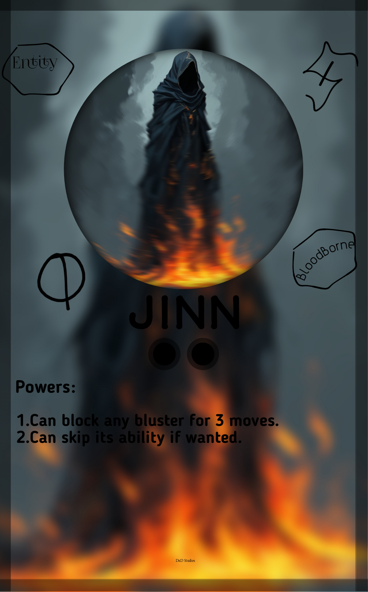
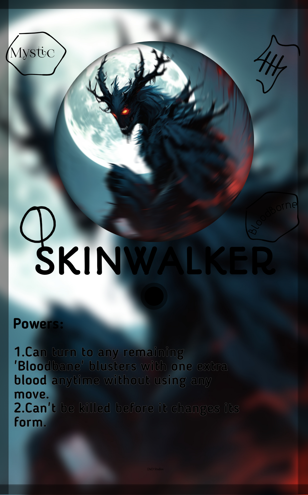

Discord
Discord
 Github
Github
.jpg) Twitter
Twitter
.png) Youtube
Youtube
 Instagram
Instagram
These blusters are mainly used to defend. These can be used to block, heal, resurrect, time travel and also shapeshift.
The cards are:

WATCHMAKER
NAME: Edmund Sinclair
ORIGIN: Geneva, Switzerland
BIRTH: 11-07-1854
PROFESSION: Watchmaker
MASTERPIECE COUNT: 7689
Edmund Sinclair is a renowned watchmaker from Geneva, Switzerland, born on November 7, 1854. He is celebrated for his exceptional craftsmanship and innovation in horology. With 67 bespoke timepieces to his name, Sinclair has become famous for his intricate designs and precision engineering. He has a high Hex of 3 falling under the group of 'BloodSmiths'. His work is highly sought after by collectors and connoisseurs worldwide. Known for blending traditional techniques with cutting-edge technology, Sinclair's timepieces are considered masterpieces in the world of watchmaking, reflecting his expertise and dedication to the art of timekeeping.
MECHA
NAME: Marcus Lee
ORIGIN: Detroit, USA
BIRTH: 09-05-1980
PROFESSION: Mechanic
REPAIR COUNT: 5478
Marcus Lee is a highly skilled mechanic based in Detroit, USA, born on September 5, 1980. With a career spanning over two decades, he is known for his expertise in automotive repair and maintenance. Having completed 1,437 repairs, Lee is renowned for his proficiency in diagnosing and fixing complex mechanical issues. His reputation for reliability and precision has earned him a strong following among car owners and automotive enthusiasts. He has a high Hex of 3 falling under the group of 'BloodSmiths'. Lee’s commitment to quality service and his extensive knowledge make him a leading figure in the local automotive repair community.
KNIGHT
NAME: Sir Cedric de Valor
ORIGIN: Camelot, England
BIRTH: 01-15-1150
PROFESSION: Knight
TOURNAMENT COUNT: 457
Sir Cedric de Valor is a distinguished knight from Camelot, England, born on January 15, 1150. Known for his chivalry and valor, Sir Cedric has competed in 38 major tournaments, securing numerous victories and accolades for his prowess in combat and his adherence to the knightly code. His reputation for bravery and honor has made him a celebrated figure in the annals of medieval knighthood. He has a high Hex of 2 falling under the group of 'Law & Order'. Sir Cedric is revered for his dedication to defending the realm and upholding the virtues of knighthood, earning him a place of respect and admiration in the storied history of Camelot.
HACKER
NAME: Alex Mercer
ORIGIN: Ungerhausen, Germany
BIRTH: 06-22-1999
PROFESSION: Hacker
BREACH COUNT: 1152
Alex Mercer is a highly skilled hacker from Ungerhausen, Germany, born on June 22, 1999. Known for his expertise in cybersecurity and digital infiltration, Mercer has successfully executed 254 high-profile breaches into secure networks and systems. His abilities range from bypassing advanced security measures to uncovering sensitive information. Renowned for his technical acumen and strategic approach, Mercer operates with precision and discretion. He has a high Hex of 3 falling under the group of 'Criminals'. His activities have garnered both fear and respect within the cyber world, making him a significant and enigmatic figure in the realm of hacking.
IMAM
NAME: Imam Yusuf al-Hakim
ORIGIN: Cairo, Egypt
BIRTH: 04-12-1958
PROFESSION: Imam
SERMON COUNT: 1192
Imam Yusuf al-Hakim is a respected imam from Cairo, Egypt, born on April 12, 1958. Renowned for his profound knowledge of Islamic theology and his eloquence in delivering sermons, Imam Yusuf has delivered 1,102 sermons over his distinguished career. He is known for his commitment to guiding his congregation with wisdom and compassion, as well as his active involvement in community service and education. He has a high Hex of 3 falling under the group of 'Mystics'. His contributions to spiritual leadership and his dedication to promoting peace and understanding have earned him significant respect and admiration within the Muslim community.
MAGE

NAME: Eric Moonshadow
ORIGIN: Avalon, Britain
BIRTH: 11-11-1500
PROFESSION: Mage
SPELL COUNT: 978
Eric Moonshadow is a renowned mage from Avalon, Britain, born on November 11, 1500. Known for his mastery of arcane arts and mystical knowledge, Eric has cast 378 powerful spells throughout her illustrious career. His expertise spans various schools of magic, including elemental, healing, and illusion. Eric's contributions to magical theory and hid role in significant mystical events have established her as a prominent figure in the world of magic. He has a high Hex of 3 falling under the group of 'Mystics'. His wisdom and magical prowess have made her a revered and influential mage in both historical and magical lore.
DOCTOR

NAME: Dr. José Martínez
ORIGIN: Buenos Aires, Argentina
BIRTH: 03-14-1965
PROFESSION: Doctor
PATIENT COUNT: 10,873
Dr. José Martínez is a respected physician from Buenos Aires, Argentina, born on March 14, 1965. With a career spanning over 30 years, he has treated 10,873 patients, specializing in neurology. Known for his exceptional skill in diagnosing and managing neurological disorders, Dr. Martínez is highly regarded for his patient-centered approach and contributions to neurological research. He has a decent Hex of 1 falling under the group of 'Medics'. His dedication to advancing medical knowledge and improving patient care has earned him significant respect in the medical community.
BARTENDER

NAME: Isabella Rossi
ORIGIN: Naples, Italy
BIRTH: 03-15-1987
PROFESSION: Bartender
TYPES OF DRUGS TAKEN: 4,587
Isabella Rossi is a skilled bartender from Naples, Italy, renowned for her exceptional mixology skills and creative craft cocktails. She has gained a reputation for her unique ability to blend traditional Italian flavors with modern techniques, making her a sought-after figure in the world of upscale bars and restaurants. Known for her engaging personality and impeccable service, Isabella has become a favorite among patrons seeking an unforgettable drinking experience. She has a decent Hex of 1 falling under the group of 'Criminals'. Her innovative approach to mixology has earned her accolades in numerous industry competitions and features in leading lifestyle publications.
JINN

NAME: Azarath
ORIGIN: The Rub' al Khali Desert, Arabia
BIRTH: 500 B.C
PROFESSION: N/A
SOULS REAPED: 58,932
Its real name is Azarath. It was born in the vast expanse of the Rub' al Khali Desert in Arabia. Azarath is a formidable jinn, known for its ability to manipulate elements and enforce ancient pacts. As a guardian of ancient contracts and a mediator of hidden forces, it is bound by the ancient laws of its kind. Azarath is believed to have been granted its powers by a primordial force, making it a significant figure in the jinn hierarchy. It has served its purpose for over 2,500 years, upholding the agreements of mortals and supernatural beings alike. It has a decent Hex level of 1, falling under the group of 'Entities'. Azarath is a steadfast enforcer of its duties, ensuring that ancient pacts are honored and respected.
SKINWALKER

NAME: Naya-Wa
ORIGIN: The Great Plains, North America
BIRTH: 1500 A.D.
PROFESSION: N/A
SHIFTED FORM COUNT: 929,821
Its real name is Naya-Wa. Originating from the vast Great Plains of North America, Naya-Wa is a powerful skinwalker known for its ability to transform into various animal forms. As a guardian of ancient traditions and protector of sacred lands, Naya-Wa operates under a complex set of mystical and cultural laws. This being uses its shapeshifting abilities to both guard and guide, navigating between the realms of the natural and supernatural. With a deep connection to the land and its spirits, Naya-Wa has served in this role for over 500 years. It holds a high Hex level of 3, falling under the group of 'Mystics'. Naya-Wa is respected for its profound knowledge of ancient rites and its commitment to maintaining the balance between human and spiritual realms.